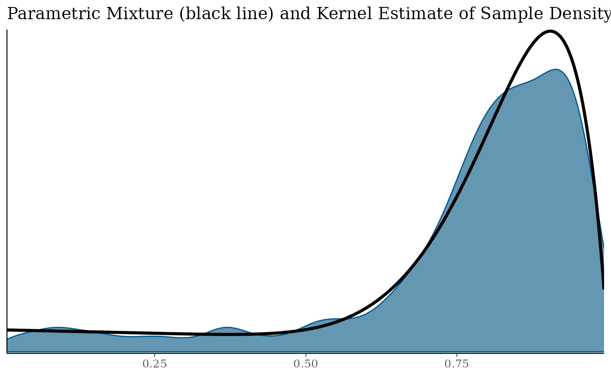
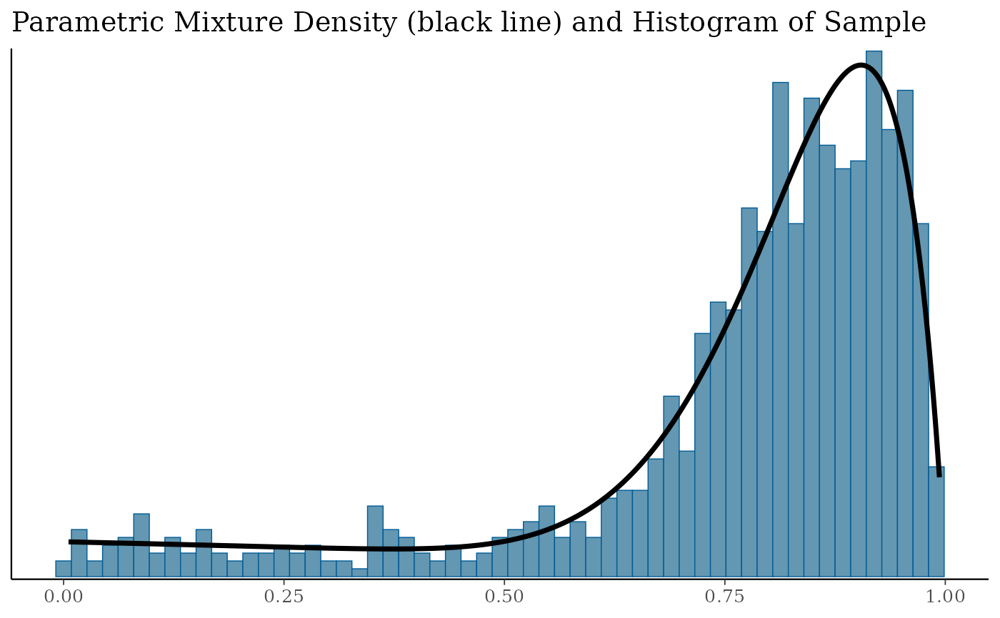

Produce diagnostic plots of EM fits returned from mixfit.
Arguments
- x
EM fit
- size
Optional argument passed to
ggplot2routines which control line thickness.- link
Choice of an applied link function. Can take one of the values
identity(default),logitorlog.- ...
Ignored.
Overlays the fitted mixture density with a histogram and a density plot of the raw sample fitted. Applying a link function can be beneficial, for example a
logit(log) link for beta (gamma) mixtures obtained from a Binomial (Poisson)gMAPanalysis.
Value
A list of ggplot plots for
diagnostics of the EM run. Detailed EM diagnostic plots are
included only if the global option RBesT.verbose is set to
TRUE. These include plots of the parameters of each
component vs the iteration. The plot of the mixture density with a
histogram and a density of the fitted sample is always returned.
Customizing ggplot2 plots
The returned plot is a ggplot2 object. Please refer to the
"Customizing Plots" vignette which is part of RBesT
documentation for an introduction. For simple modifications (change
labels, add reference lines, ...) consider the commands found in
bayesplot-helpers. For more advanced
customizations please use the ggplot2 package directly. A
description of the most common tasks can be found in the
R Cookbook and a full
reference of available commands can be found at the
ggplot2 documentation
site.
See also
Other EM:
mixfit()
Examples
bmix <- mixbeta(rob = c(0.2, 1, 1), inf = c(0.8, 10, 2))
bsamp <- rmix(bmix, 1000)
bfit <- mixfit(bsamp, type = "beta", Nc = 2)
pl <- plot(bfit)
print(pl$mixdens)

print(pl$mix)

# \donttest{
# a number of additional plots are generated in verbose mode
.user_option <- options(RBesT.verbose = TRUE)
pl_all <- plot(bfit)
# recover previous user options
options(.user_option)
names(pl_all)
#> [1] "mixdist" "w" "a" "b" "lN" "Lm" "N"
#> [8] "m" "Lw" "lli" "mixdens" "mixecdf" "mix"
# [1] "mixdist" "a" "b" "w" "m" "N" "Lm" "lN" "Lw" "lli" "mixdens" "mixecdf" "mix"
# }